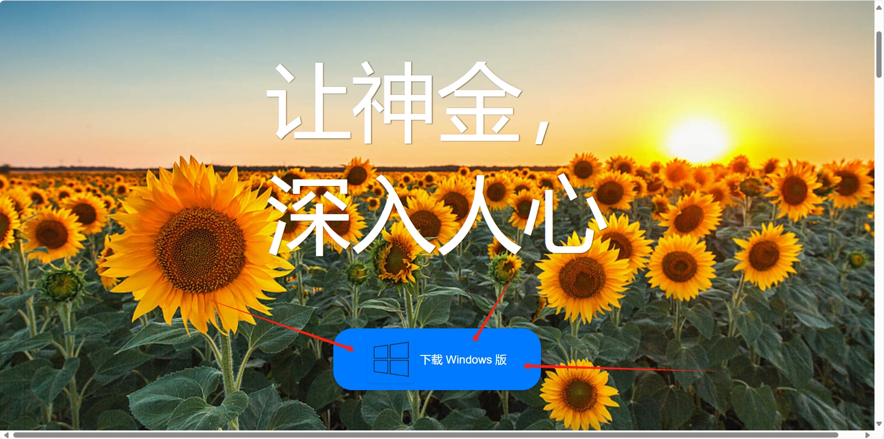
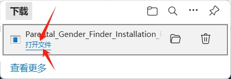
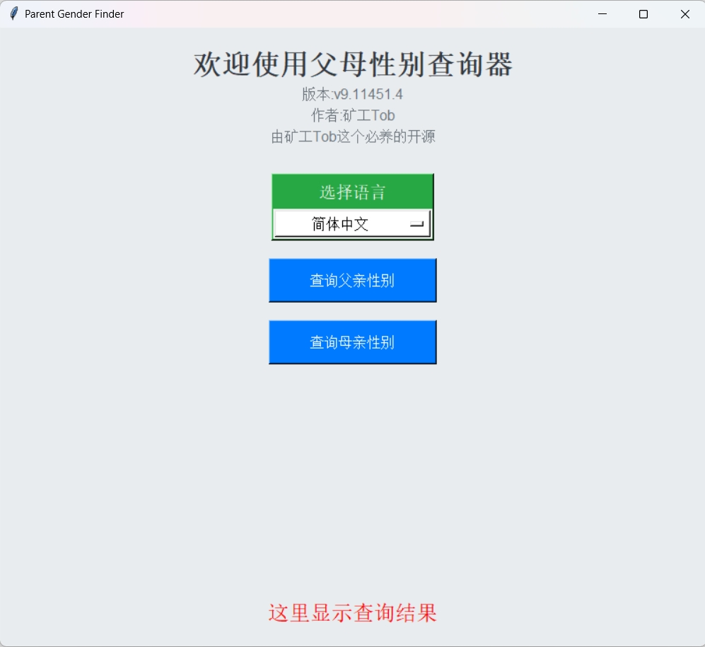

欢迎您，用户！

使用教程
- 1. 首先，在官网中点击下载此软件

- 2. 等待下载完成，点击打开文件

- 3. 选择你的安装语言，点击安装

- 4. 选择你的安装路径，最好放在内存最多的的盘（强烈不建议放在C盘）

- 5. 点击创建桌面快捷方式，然后点击下一步

- 6. 确认安装路径无误后，点击安装

- 7. 等待安装完毕，先注册一个账号（可以乱填）

- 8. 注册成功后，回到登录页面，点击倒三角选择您注册的账号（最好点击记住密码），然后点击登录

- 9. 这样，您就可以开始使用软件了，可以选择您的语言进行查询
